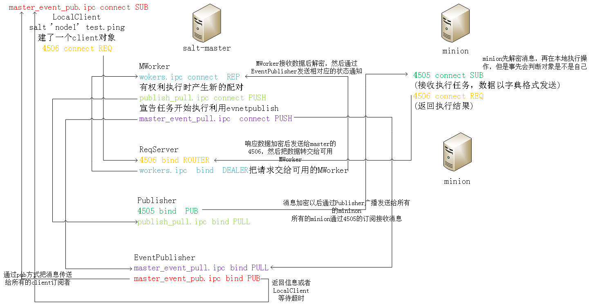

saltstack
status
$ID: 定义state的名称，通常采用与描述的对象保持一致的方法，如apache、nginx等 $State: 须管理对象的类型，详见http://docs.saltstack.com/ref/states/all/index.html - $state: states 定制对象的状态 salt \* state.sls dhcp 使用 salt \* state.sls dhcp/aaa 使用dhcp目录下的aaa.sls salt \* state.sls dhcp test=True 测试，不会修改minion salt \* state.highstate /usr/lib/python2.6/site-packages/salt/states 映射到modules /usr/lib/python2.6/site-packages/salt/modules 如果使用states，需要在/srv/salt 下编写sls文件 state 确定你的文件路径 file_roots: base: - /srv/salt 保证你有入口文件 state文件包 vim /srv/salt/dhcp/init.sls include: - dhcp.python_devel 包含dhcp目录下的python_devel.sls cat /srv/salt/dhcp/python_devel.sls dhcp: pkg.installed salt \* state.sls dhcp [root@node1 salt]# cat top.sls base: '*': - test 找test.sls test是一个sls文件的名字 或者是一个目录的名字（该目录下必须有init.sls这个文件） [root@node1 salt]# cat test.sls httpd: #id(默认这个位置对应的是name的值) pkg: #state - installed #state的函数 state目录 /usr/lib/python2.6/site-packages/salt/states 使用该state salt 'node2' state.highstate sls文件的中的任务执行顺序可以使用关键字控制（require） httpd: ID pkg: states模块 - installed 模块的函数 service.running: - require: 需要，依赖 - pkg: httpd 指定执行某一个sls文件（文件的扩展名.sls不需要写出来） [root@node1 salt]# salt 'node2' state.sls test 针对配置文件设置监听，实现自动重启 ############################################### httpd: pkg: - installed service: - running - require: - pkg: httpd - watch: 观察，文件有变化就启动 - file: /etc/httpd/conf/httpd.conf /etc/httpd/conf/httpd.conf: file: - managed - source: salt://httpd.conf - require: - pkg: httpd ################################################ apache: pkg: - name: httpd - installed service.running: - name: httpd - require: - pkg: httpd - watch: - file: apache_config apache_config: file.managed: - name: /etc/httpd/conf/httpd.conf - source: salt://httpd.conf - template: jinja 在apache_config控制的文件用jinja渲染 - require: - pkg: httpd httpd.conf 1、 安装软件包 2、 修改配置文件 3、 启动服务 https://docs.saltstack.com/en/latest/ref/states/all/index.html vim user.sls {%for user in ['test1','test1','test3','test4']%} 渲染 {{user}}: 变量 user.present {%endfor%} 结束（如果是if 为endif） 一次调用多个sls文件 vim /srv/salt/top.sls base: ‘*’ - user - apache_start salt \* state.highstate 源码安装nginx nginx_source: file.recurse: # file.managed:用于单文件，file.recurse用于目录 - name: /tmp/ - source: salt://nginx/ extract_nginx: cmd.run: - cwd: /tmp - names: # 多命令用names，单命令用name - tar xf nginx-1.6.2.tar.gz - tar xf pcre-8.35.tar.gz - require: - file: nginx_source nginx_compile: cmd.run: - cwd: /tmp/nginx-1.6.2 - names: - ./configure --prefix=/usr/local/nginx --with-pcre=/tmp/pcre-8.35 && make - make install - require: - cmd: extract_nginx 自定义 state就是用来控制sls文件与module的映射 state默认路径 /usr/lib/python2.6/site-packages/salt/states mkdir -pv /srv/salt/_states [root@node1 _states]# cat wjj.py def bs(name, x): 定义函数 ret = { 定义一个字典 'name': name, 'changes': {}, 'result': False, 'comment': 'test_state' 描述的字段 } try: result = x*x 做一些事情 ret['changes']['new'] = result ret['result'] = True except: 出现异常怎么办 ret['changes']['new'] = 'jisuan cuwu' return ret 注意你的函数的第一个参数应该永远是name 同步一下你的修改 salt '*' saltutil.sync_all 使用你自定义的state 定义sls文件 [root@node1 _states]# cat /srv/salt/jisuan.sls test: wjj: - bs - x: 3 salt 'node2' state.sls jisuan tips:在state里面引用salt命令 __salt__['模块.函数'](参数) #encoding=utf-8 import logging import os log = logging.getLogger(__name__) def touch(name, path, file): ret = { 'name': name, 'changes': {}, 'result': True, 'comment': 'test_state' } #log.error(name) #log.error(path) try: with open(path+'/'+str(file), 'w') as f: f.write('my test!') except Exception, e: log.error(str(e)) return ret def delete(name, path, file): ret = { 'name': name, 'changes': {}, 'result': True, 'comment': 'test_state' } cmd='rm -fr ' + path + '/' + file os.system(cmd) ret['result']=True return ret
pillar
https://docs.saltstack.com/en/latest/topics/pillar/index.html 修改/etc/salt/master配置中的pillar_opts:Ture或False来定义是否开启或禁用这项功能 目录 /srv/pillar vim /srv/pillar/top.sls base: '*': - vimrc - data - pkg vim /srv/pillar/data.sls bind: port: 53 listen-on: any vim /srv/pillar/vimrc.sls {% if grains['id'].endswith('server') %} id标识以server结尾的 类似的startswith vimrc: salt://edit/vimrc1 {% else %} vimrc: salt://edit/vimrc2 {% endif %} vim /srv/pillar/pkg.sls {% if grains['os'] == 'RedHat' %} 根据不同的操作系统，定义不同的包名 apache: httpd git: git {% elif grains['os'] == 'Debian' %} apache: apache2 git: git-core {% endif %} 刷新生效 salt '*' saltutil.refresh_pillar 查看 salt \* pillar.items 使用pillar 可以在state、模板文件中引用，模板格式为“{{pillar变量}}”，例如： {{ pillar['appname'] }}（一级字典） {{ pillar['flow']['maxconn'] }}（二级字典）或 {{ salt['pillar.get']('flow: 'maxconn', {}) }} Python API格式如下：pillar['flow']['maxconn'] pillar.get(' flow:appname', {}) 1、在state的sls文件 vim /srv/salt/down_vimrc.sls /root/.vimrc: file.managed: - source: {{ pillar['vimrc'] }} 调用之前定义的pillar 或者- source: {{ salt['pillar.get']('vimrc','salt://edit/vimrc2') }} pillar的key，默认值 salt \* state.show_sls down_vimrc 查看详细的变量 2、salt -I "nginx:80" cmd.run "ls" -I 指定pillar 3、pillar的临时定义 vim /srv/salt/pillar_temp.sls {%set u = pillar['u_name']%} 之前没有这个pillar {{u}}: user.present salt 'node2' state.sls pillar_temp pillar='{"u_name": "v1"}' 临时指定一个pillar
job
[root@salt-master salt]# salt -I "nginx:80" cmd.run "sleep 100" -v Executing job with jid 20151011154835704857 salt-run 管理job salt-run -d |grep jobs salt-run jobs.active 查看当前正在运行的jobs salt-run jobs.list_job 20130916125524463507 指定jid查看jobs详细信息 salt-run jobs.list_jobs #查看所有jobs信息 salt-run jobs.lookup_jid 20130916125524463507 #指定jid查询jobs结果 salt-run jobs.print_job #指定jid查询jobs详细信息 ------------------------------------------------- 通过saltutil模块管理job salt \* sys.doc saltutil |grep job salt '*' saltutil.find_cached_job <job id> #查询job cache信息 salt 'node2' saltutil.find_job 20150810003021849521 通过jid查找 salt 'node2' saltutil.is_running cmd.run 通过函数名查找 salt 'node2' saltutil.kill_job 20150810003232388165 杀死一个job saltutil.running #查看minion当前正在运⾏的jobs saltutil.find_job<jid> #查看指定jid的job(minion正在运⾏的jobs) saltutil.signal_job<jid> <single> #给指定的jid进程发送信号 saltutil.term_job <jid> #终⽌指定的jid进程(信号为15) saltutil.kill_job <jid> #终⽌指定的jid进程(信号为9)
return存储结果
每台minion跟存储服务器连接后发送返回数据。在大规模的Minion环境下并不适合企业级应用。也有网友通过event事件实现Master端直接Return到存储服务器。参考地址为：http://pengyao.org/salt-stack_master_retuner_over_event_system.html 使用redis 存储 修改minion的/etc/salt/minion配置文件 redis.db: '0' #redis数据库 redis.host: 'vps.shencan.net' #redis主机(ip地址和域名都行) redis.port: 6379 #redis端口 minion按照redis客户端 pip install redis python -c 'import redis; print redis.VERSION' salt 'Minion' cmd.run 'hostname' --return redis mysql存储 /usr/lib/python2.6/site-packages/salt/returners/ 具体的配置 cat mysql.py vim /etc/salt/minion（冒号后有空格） mysql.host: '10.255.254.221' mysql.user: 'salt' mysql.pass: '123' mysql.db: 'salt' mysql.port: 3306 在10.255.254.221这台mysql服务器上 启动mysql服务 设置mysql用户，salt，密码，123 GRANT ALL PRIVILEGES ON *.* TO 'salt'@'%' IDENTIFIED BY ‘123’； 把以下sql语句保存到/tmp/salt.sql文件中，执行mysql -u root < /tmp/salt.sql (创建一个salt库，然后在salt库里面创建两个表jids，salt_returns) GRANT ALL PRIVILEGES ON *.* TO 'salt'@'%' IDENTIFIED BY ‘123’； CREATE DATABASE `salt` DEFAULT CHARACTER SET utf8 DEFAULT COLLATE utf8_general_ci; USE `salt`; DROP TABLE IF EXISTS `jids`; CREATE TABLE `jids` ( `jid` varchar(255) NOT NULL, `load` mediumtext NOT NULL, UNIQUE KEY `jid` (`jid`) ) ENGINE=InnoDB DEFAULT CHARSET=utf8; DROP TABLE IF EXISTS `salt_returns`; CREATE TABLE `salt_returns` ( `fun` varchar(50) NOT NULL, `jid` varchar(255) NOT NULL, `return` mediumtext NOT NULL, `id` varchar(255) NOT NULL, `success` varchar(10) NOT NULL, `full_ret` mediumtext NOT NULL, `alter_time` TIMESTAMP DEFAULT CURRENT_TIMESTAMP, KEY `id` (`id`), KEY `jid` (`jid`), KEY `fun` (`fun`) ) ENGINE=InnoDB DEFAULT CHARSET=utf8; DROP TABLE IF EXISTS `salt_events`; CREATE TABLE `salt_events` ( `id` BIGINT NOT NULL AUTO_INCREMENT, `tag` varchar(255) NOT NULL, `data` varchar(1024) NOT NULL, `alter_time` TIMESTAMP DEFAULT CURRENT_TIMESTAMP, `master_id` varchar(255) NOT NULL, PRIMARY KEY (`id`), KEY `tag` (`tag`) ) ENGINE=InnoDB DEFAULT CHARSET=utf8; 保证你的python能够操作mysql数据库 yum install MySQL-python -y 使用mysql作为returner，将结果放入mysql [root@node1 ~]# salt 'node2' test.ping --return mysql node2: True ---------------------------------------------------------------- 可以通过salt的schedule去收集minion上的信息。 schedule: uptime: function: status.uptime seconds: 60 returner: mysql meminfo: function: status.meminfo minutes: 5 returner: mysql
api web
用户 # chmod 755 /etc/salt/master /var/run/salt /var/cache/salt 修改master配置文件 external_auth: pam: a1: - '*': - test.* - cmd.* http://docs.saltstack.com/en/latest/topics/eauth/index.html#acl-eauth 切换a1用户进行测试 salt -a pam * test.ping salt -a pam * cmd.run 'whoami' 测试令牌 $ salt -T -a pam web\* test.ping [a1@zabbix_server ~]$ salt -T -a pam * test.ping username: a1 password: zabbixnode1.example.com: True API yum install salt-api -y cd /etc/pki/tls/certs # 生成自签名证书, 过程中需要输入key密码及RDNs make testcert cd /etc/pki/tls/private/ # 解密key文件，生成无密码的key文件, 过程中需要输入key密码，该密码为之前生成证书时设置的密码 openssl rsa -in localhost.key -out localhost_nopass.key 或者 yum install gcc make python-devel libffi-develpip-python install PyOpenSSL salt-call tls.create_self_signed_cert #生成证书，需要有salt-minion，salt-call在salt-minion包里 添加saltapi.conf 文件 vim /etc/salt/master.d/saltapi.conf rest_cherrypy: port: 8000 host: 127.0.0.1 #disable_ssl: true 开关https ssl_crt: /etc/pki/tls/certs/localhost.crt #使用前面生成的证书 ssl_key: /etc/pki/tls/certs/localhost.key external_auth: pam: saltapi: - .* - '@runner' - '@wheel' #添加用户 useradd -M -s /sbin/nologin saltapi echo "spassword" | passwd saltapi --stdin 重启master 启动salt-api ---------------------------------------- import json import urllib import urllib2 class SaltAPI(object): __token_id = '' def __init__(self): self.__url = url self.__user = user self.__password = pass params = {'eauth': 'pam', 'username': self.__user, 'password': self.__password} content = self.postRequest(params, prefix='/login') print content['return'][0]['token'] self.__token_id = content['return'][0]['token'] def postRequest(self, obj, prefix='/'): url = self.__url + prefix headers = {'X-Auth-Token': self.__token_id} data = urllib.urlencode(obj) req = urllib2.Request(url, data, headers) opener = urllib2.urlopen(req) content = json.loads(opener.read()) return content def postRequest1(self, obj, prefix='/'): url = self.__url + prefix headers = {'X-Auth-Token': self.__token_id} req = urllib2.Request(url, obj, headers) opener = urllib2.urlopen(req) content = opener.info() return content def list_all_key(self): params = {'client': 'wheel', 'fun': 'key.list_all'} content = self.postRequest(params) # minions = content['return'][0]['data']['return']['minions'] # minions_pre = content['return'][0]['data']['return']['minions_pre'] # return minions,minions_pre minions = content['return'][0]['data']['return'] return minions def delete_key(self, node_name): params = {'client': 'wheel', 'fun': 'key.delete', 'match': node_name} content = self.postRequest(params) ret = content['return'][0]['data']['success'] return ret def accept_key(self, node_name): params = {'client': 'wheel', 'fun': 'key.accept', 'match': node_name} content = self.postRequest(params) ret = content['return'][0]['data']['success'] return ret def reject_key(self, node_name): params = {'client': 'wheel', 'fun': 'key.reject', 'match': node_name} content = self.postRequest(params) ret = content['return'][0]['data']['success'] return ret def remote_noarg_execution(self, tgt, fun): ''' Execute commands without parameters ''' params = {'client': 'local', 'tgt': tgt, 'fun': fun} content = self.postRequest(params) ret = content['return'][0][tgt] return ret def remote_execution(self, tgt, fun, arg): ''' Command execution with parameters ''' params = {'client': 'local', 'tgt': tgt, 'fun': fun, 'arg': arg} content = self.postRequest(params) ret = content['return'][0][tgt] return ret def shell_remote_execution(self, tgt, arg): ''' Shell command execution with parameters ''' params = {'client': 'local', 'tgt': tgt, 'fun': 'cmd.run', 'arg': arg, 'expr_form': 'list'} content = self.postRequest(params) ret = content['return'][0] return ret def grains(self, tgt, arg): ''' Grains.item ''' params = {'client': 'local', 'tgt': tgt, 'fun': 'grains.item', 'arg': arg} content = self.postRequest(params) ret = content['return'][0] return ret def target_remote_execution(self, tgt, fun, arg): ''' Use targeting for remote execution ''' params = {'client': 'local', 'tgt': tgt, 'fun': fun, 'arg': arg, 'expr_form': 'nodegroup'} content = self.postRequest(params) jid = content['return'][0]['jid'] return jid def deploy(self, tgt, arg): ''' Module deployment ''' params = {'client': 'local', 'tgt': tgt, 'fun': 'state.sls', 'arg': arg} content = self.postRequest(params) return content def async_deploy(self, tgt, arg): ''' Asynchronously send a command to connected minions ''' params = {'client': 'local_async', 'tgt': tgt, 'fun': 'state.sls', 'arg': arg} content = self.postRequest(params) jid = content['return'][0]['jid'] return jid def target_deploy(self, tgt, arg): ''' Based on the list forms deployment ''' params = {'client': 'local_async', 'tgt': tgt, 'fun': 'state.sls', 'arg': arg, 'expr_form': 'list'} content = self.postRequest(params) jid = content['return'][0]['jid'] return jid def jobs_list(self): ''' Get Cache Jobs Defaut 24h ''' url = self.__url + '/jobs/' headers = {'X-Auth-Token': self.__token_id} req = urllib2.Request(url, headers=headers) opener = urllib2.urlopen(req) content = json.loads(opener.read()) jid = content['return'][0] return jid def runner_status(self, arg): ''' Return minion status ''' params = {'client': 'runner', 'fun': 'manage.' + arg} content = self.postRequest(params) jid = content['return'][0] return jid def runner(self, arg): ''' Return minion status ''' params = {'client': 'runner', 'fun': arg} content = self.postRequest(params) jid = content['return'][0] return jid cl = SaltAPI() print cl.shell_remote_execution('aws-ms1','date') print cl.grains('aws-ms1','ipv4') WEB(halite)很不好用 这个还行 https://github.com/yueyongyue/saltshaker/ yum install salt-api git cd /var/www/ git clone https://github.com/saltstack/halite cd halite/halite ./genindex.py -C vim /etc/salt/master rest_cherrypy: host: 0.0.0.0 port: 8080 debug: true disable_ssl: True static: /var/www/halite/halite app: /var/www/halite/halite/index.html external_auth: pam: salt: - .* - '@runner' - '@wheel' /etc/init.d/salt-master restart useradd salt echo salt | passwd –stdin salt salt -a pam \* test.ping 输入用户和密码 如看到minion返回信息 则表示登陆验证成功 启动 salt-api salt-api -d 或 cd /var/www/halite/halite python server_bottle.py -d -C -l debug -s cherrypy 打开http://ip:8080/app
beacons
https://docs.saltstack.com/en/latest/topics/beacons/index.html https://docs.saltstack.com/en/latest/ref/beacons/all/index.html#all-salt-beacons 1 在minion上定义beacon beacons: service: httpd: onchangeonly: True uncleanshutdown: /var/run/httpd/httpd.pid 只要httpd的状态放生改变就会给master发送事件 2 你要知道发送的event长什么样 salt/beacon/centos2/service/ { "_stamp": "2015-12-06T07:24:25.095014", "data": { "httpd": { "running": false, "shutdown": "clean" }, "id": "centos2" }, "tag": "salt/beacon/centos2/service/" } 3 编写master配置文件，监听相对应的tag vim /etc/salt/master reactor: - 'salt/beacon/znode2/service/': - '/srv/reactor/backup.sls' 4 编写触发文件 vim /srv/reactor/backup.sls {%if data['data']['httpd']['running'] == False %} backup file: local.cmd.run: - tgt: {{data['data']['id']}} - arg: - "/etc/init.d/httpd start" {%endif%} #如果调用的是state.sls 还要编写相对应的sls文件 自定义beacon插件 1 mkdir -pv /srv/salt/_beacons 2 在这个目录下编写插件 3 同步 salt '*' saltutil.sync_all 4 vim t.py #你在minion配置文件中的字典，会赋值给config beacons: t: - rm: /tmp/kk - interval: 2 函数的返回值必须是[{'t1':1},{'t2':2}] 导入你需要的模块 import 模块名字 def beacon(config): ret = [] r_dict = {} 拆分config然后去做你想做的判断 然后把返回值追加到ret return ret 做一个最简单的审计系统 # -*- coding: utf-8 -*- import logging import re import pexpect log = logging.getLogger(__name__) __virtualname__ = 't' """ def __virtual__(): if salt.utils.is_windows(): return False else: return __virtualname__ """ def beacon(config): ''' code_block:: yaml beacons: t: - rm : / - interval: 100 ''' ret = [] user = __salt__['cmd.run']('whoami') logging.debug(user) r_dict = {} for t in config: for k,v in t.items(): cmd = "grep '^.*rm.* /tmp/kk[[:space:]]$' /tmp/.shellog" output, status = pexpect.run(cmd, withexitstatus=1) if status == 0 : logging.debug(output) r_dict = { user : output} logging.debug(r_dict) ret.append(r_dict) return ret
安装zabbix_agent
ls zabbix_linux_install/ agent_install.sls init.sls zabbix_agentd.conf zabbix.repo cat init.sls include: - zabbix_linux_install.agent_install cat zabbix.repo [zabbix] baseurl=http://mirrors.aliyun.com/zabbix/zabbix/2.4/rhel/6/x86_64/ gpgcheck=0 cat agent_install.sls agent_install.sls /etc/yum.repos.d/zabbix.repo: file.managed: - source: salt://zabbix_linux_install/zabbix.repo zabbix-agent: cmd.run: - name: yum install zabbix-agent-2.4.5 -y - require: - file: /etc/yum.repos.d/zabbix.repo service.running: - require: - cmd: zabbix-agent - watch: - file: /etc/zabbix/zabbix_agentd.conf /etc/zabbix/zabbix_agentd.conf: file.managed: - source: salt://zabbix_linux_install/zabbix_agentd.conf ( 主要内容：Hostname={{ grains['ip_interfaces'] ['eth1'][0] }}) - template: jinja - require: - cmd: zabbix-agent 老师的 {% set NODENAME = grains['nodename'] %} {% set BINDIR = '/usr/local/zabbix/sbin' %} {% set LOGDIR = '/var/log/zabbix' %} {% set Serverip = '192.168.40.11' %} # source pacekages zabbix_source: file.managed: - name: /tmp/zabbix-2.4.1.tar.gz - unless: test -e /tmp/zabbix-2.4.1.tar.gz - source: salt://files/common/zabbix/zabbix-2.4.1.tar.gz #trace zabbix extract_zabbix: cmd.run: - cwd: /tmp - names: - tar -zxf zabbix-2.4.1.tar.gz >/dev/null 2>&1 - unless: test -d /tmp/zabbix-2.4.1/ - require: - file: zabbix_source #Add user zabbix_user: user.present: - name: zabbix - uid: 1000 - createhome: False - gid_from_name: True - shell: /sbin/nologin /var/log/zabbix: file.directory: - user: zabbix - group: zabbix - dir_mode: 755 - file_mode: 655 - recurse: - user - group "init.sls" 87L, 2508C agent_start_init: file.managed: - name: /etc/init.d/zabbix_agentd - user: root - mode: 0755 - source: salt://files/common/zabbix/zabbix_agentd - source_hash: salt://files/common/zabbix_agent/zabbix_agentd - template: jinja - defaults: ZABBIX_BIN: {{ BINDIR }} - unless: if [[ ${cat /etc/init.d/zabbix_agentd | grep "{{ BINDIR }}" | awk -F'=' 'NR==1{print $2}'} = '"{{ BINDIR }}"' ]];then exit 0;fi cmd.run: - names: - /sbin/chkconfig --add zabbix_agentd - /sbin/chkconfig zabbix_agentd on - unless: /sbin/chkconfig --list zabbix_agentd service.running: - name: zabbix_agentd - enable: True - restart: True zabbix_config_set: file.managed: - name: /usr/local/zabbix/etc/zabbix_agentd.conf - user: root - mode: 744 - source: salt://files/common/zabbix/zabbix_agentd.conf - template: jinja - defaults: ServerADD: {{ Serverip }} AgentNAME: {{ NODENAME }} - unless: if grep '{{ NODENAME }}' /usr/local/zabbix/etc/zabbix_agentd.conf >/dev/null 2>&1;then exit 0;fi /usr/bin/zabbix_get: file.symlink: - target: /usr/local/zabbix/bin/zabbix_get - unless: test -L /usr/bin/zabbix_get /usr/bin/zabbix_sender: file.symlink: - target: /usr/local/zabbix/bin/zabbix_sender - unless: test -L /usr/bin/zabbix_sender
显示salt进程具体名称
安装setproctitle(Master/Minion端均进行) yum -y install python-setproctitle 重启salt service salt-master restart service salt-minion restart 查看Master端进程 ps ax |grep salt |grep -v salt Master端显示如下(同时个人在行尾追加上进程的具体用途): 2943 ? S 0:00 /usr/bin/python /usr/bin/salt-master -d ProcessManager # 中心进程管理器 2944 ? S 0:00 /usr/bin/python /usr/bin/salt-master -d _clear_old_jobs # 清除旧的Jobs文件及更新fileserver 2945 ? Sl 0:00 /usr/bin/python /usr/bin/salt-master -d Publisher # 将任务PUB到Minion端 2946 ? Sl 0:00 /usr/bin/python /usr/bin/salt-master -d EventPublisher # Event Publisher进程 2951 ? S 0:00 /usr/bin/python /usr/bin/salt-master -d ReqServer_ProcessManager # ReqServer进程管理器 2952 ? Sl 0:01 /usr/bin/python /usr/bin/salt-master -d MWorker # 劳苦大众, 奋斗在一线的Worker进程 2953 ? Sl 0:01 /usr/bin/python /usr/bin/salt-master -d MWorker # 同楼上 2954 ? Sl 0:01 /usr/bin/python /usr/bin/salt-master -d MWorker 2955 ? Sl 0:01 /usr/bin/python /usr/bin/salt-master -d MWorker 2956 ? Sl 0:01 /usr/bin/python /usr/bin/salt-master -d MWorker 2957 ? Sl 0:00 /usr/bin/python /usr/bin/salt-master -d MWorkerQueue # 将Ret接口(ROUTER)数据转发到Worker(DEALER) 执行个任务, 看看Minion端怎么显示(同时个人在行尾追加上进程的具体用途): 2003 ? Sl 0:01 /usr/bin/python /usr/bin/salt-minion -d # Minion进程, 接收来自Master端的任务 2069 ? S 0:00 /usr/bin/python /usr/bin/salt-minion -d 20150108034936245247 # 接收到任务后, 会启动名为 对应jid的进程进行任务处理及结果反馈 这样, 就可以非常清晰的知道Salt的每个进程是做什么用途的, 如果Master/Minion进程异常, 也可以迅速的定位
salt安装
并发 == 效率 差异性 4505 4506 master 队列 zeromq，raet salt-call --master=10.21.40.23 --id="host1" state.highstate yum安装 https://repo.saltstack.com/#rhel salt官方源，版本更新 http://repo.saltstack.com/yum/redhat [saltstack-repo] name=SaltStack repo for RHEL/CentOS $releasever baseurl=http://repo.saltstack.com/yum/redhat/$releasever/$basearch/latest enabled=1 gpgcheck=1 gpgkey=http://repo.saltstack.com/yum/redhat/$releasever/$basearch/latest/SALTSTACK-GPG-KEY.pub yum install epel-release yum install salt-master master端 salt-2014.1.10-4.el6.noarch salt-master-2014.1.10-4.el6.noarch salt-minion-2014.1.10-4.el6.noarch（optional） minion端（客户端） yum install salt-minion salt-2014.1.10-4.el6.noarch salt-minion-2014.1.10-4.el6.noarch 防火墙添加 iptables -I INPUT -m state --state new -m tcp -p tcp --dport 4505 -j ACCEPT iptables -I INPUT -m state --state new -m tcp -p tcp --dport 4506 -j ACCEPT python安装 yum install swig yum install gcc gcc-c++ yum install openssl-devel yum install libyaml-devel -y pip install M2Crypto pip install pyzmq pip uninstall PyCrypto pip uninstall salt Jinja2 msgpack-python PyYAML MarkupSafe pip install PyCrypto cd /usr/lib/python2.6/site-packages/ rm -fr salt salt-2014.1.4-py2.6.egg-info/ pip install salt http://docs.saltstack.com/en/latest/ http://msgpack.org/ zeromq 使用了消息队列 信息使用msgpack进行封装 选择salt的理由 1 使用消息队列（异步） zeromq 2 消息封装的是2机制 msgpack封装 3 安全使用aes算法 4 服务器开两个端口4505 4506 5 理念是block（适合拼积木，实现业务流） 配置 在master上编辑vim /etc/hosts master_ip master_name minion_ip minion_name 然后把这份文件同步到所有的主机上 修改文件描述符 修改sk_buffer echo 16777216 > /proc/sys/net/core/rmem_max echo 16777216 > /proc/sys/net/core/wmem_max echo "4096 87380 16777216" > /proc/sys/net/ipv4/tcp_rmem echo "4096 87380 16777216" > /proc/sys/net/ipv4/tcp_wmem minion vim /etc/salt/minion id: node2 (minion的名字) 冒号后有空格 master: 10.255.254.221（master的ip） /etc/init.d/salt-minion start /etc/init.d/salt-master start 查看你的minion是否发送了加入请求 [root@node1 salt]# salt-key -L salt-key –A 接受所有minion -a minion名字 接受指定的minion 测试 salt '*' test.ping 目标 模块.函数 函数的参数 如何定义目标 shell下的通配符 * "*.example.com" "web?.example.com" "web[1-5].example.com" regex 正则表达式 salt -E 'web1-(prod|devel).example.com' list 列表的方式 salt -L 'web1,web2,web3' grains(数据存放在minion上，默认就有) [root@node1 salt]# salt 'node1' grains.ls salt -G 'os:CentOS' test.ping 定义主机组 [root@node1 salt]# vim /etc/salt/master salt -N 组名 test.ping 批次执行-b （依次执行） salt '*' sys.doc 如何使用相对应的模块和函数 /usr/lib/python2.6/site-packages/salt/modules test.ping (是在minion上执行) http://docs.saltstack.com/en/latest/ref/modules/all/index.html [root@node1 modules]# salt 'node3' cmd.run 'uptime' salt中文件的根目录 file_roots: base: - /srv/salt salt 'node2' cmd.script salt://test.sh 脚本缓存的路径 /var/cache/salt/minion/files/base
修改minion id
service salt-minion stop rm -f /etc/salt/pki/minion/minion.pub rm -f /etc/salt/pki/minion/minion.pem echo $(hostname) > /etc/salt/minion_id service salt-minion start
event和反射
1、event实际就是一个字典 这个字典有两个固定的key "tag" 可以用来区分哪一个mininon "data" 包含更详细的数据，比如执行是否成功，执行的是哪一个函数，以及id是谁 2、把你的minion和master，以及其他的minion可以联动起来 master执行 salt-run state.event pretty=True 捕捉event minion执行 salt-call event.send 'tag' 'data' data可以没有,tag必须有 master再开一个终端执行salt 'zabbix_server' state.sls apache_install 捕捉到的event: salt/job/20151018191951447100/ret/zabbix_server { tag和data ,字典为data "_stamp": "2015-10-18T11:20:19.543008", "cmd": "_return", "fun": "state.sls", "fun_args": [ "apache_install" ], "id": "zabbix_server", "jid": "20151018191951447100", "out": "highstate", "retcode": 0, "return": { "pkg_|-httpd_|-httpd_|-installed": { "__run_num__": 0, "changes": {}, "comment": "Package httpd is already installed.", "duration": 4001.181, "name": "httpd", "result": true, "start_time": "11:20:14.264181" } }, "success": true } }配置 修改master配置文件 reactor: - "salt/job/*": 捕捉到的tag，jid会变化用了*代替 - /srv/reactor/my_custom_module.sls 捕捉到tag要做的事 mkdir -pv /srv/reactor/ && vim /srv/reactor/my_custom_module.sls {% if data["fun_args"][0] == "apache_install" and data["success"] == true %} 进行一些具体的判断 touch_new_file: local.state.sls: （老版本这里是cmd.state.sls） - tgt: 'zabbix_server' 执行的目标 - arg: - newfile 执行/srv/salt/newfile.sls文件 - kwarg: 临时定义pillar pillar: 注意这里是四个空格 filename: {{ data["fun_args"][0] }} {% endif %} ##这个{{data是模板里面的变量}} 相当于 salt ' zabbix_server ' state.sls newfile pillar='{"filename": " apache_install "}' cat /srv/salt/newfile.sls /tmp/{{pillar['filename']}}: file.managed: - source: salt://passwd 到此，执行salt 'zabbix_server' state.sls apache_install后(成功)，就会联动执行newfile.sls
帮助文档
包含所有模块，state等，记不起来可以在这找 salt 'centos2' sys.list_functions salt 'centos2' sys.list_functions sys - sys.argspec - sys.doc 文档， salt '*' sys.doc cmd 为cmd的文档，其他类似 - sys.list_functions module的所有function的命令， salt 'Minion' sys.list_functions cmd - sys.list_modules Minion支持的所有module列表，salt 'Minion' sys.list_modules - sys.list_renderers 查看所有Return列表 - sys.list_returner_functions - sys.list_returners - sys.list_runner_functions - sys.list_runners - sys.list_state_functions 指定states的所有function，salt 'Minion' sys.list_state_functions file - sys.list_state_modules Minion支持的所有states列表 - sys.state_doc state的详细用法与例子 - sys.reload_modules - sys.renderer_doc - sys.returner_argspec - sys.returner_doc - sys.runner_argspec - sys.runner_doc - sys.state_argspec
grains
grains是master从minion上拿数据 salt '*' grains.ls salt 'node1' grains.items salt 'node1' grains.item os salt -G 'os:CentOS' test.ping 1、用grains命令添加 salt 'Minion' grains.append saltbook 'verycool' salt '*' grains.setval key "{'sub-key': 'val', 'sub-key2': 'val2'}" 设置多个 salt '*' grains.remove key val 删除 2、在minion端定义grains vim /etc/salt/minion.d/hostinfo.conf #自定义grains,相当于打上一个标签，在根据标签进行操作 grains: roles: - webserver - memcache deployment: datacenter4 cabinet: 13 重启minion /etc/init.d/salt-minion restart 3、在master端自己编写grains，然后推送给minion mkdir /srv/salt/_grains vim /srv/salt/_grains/system.py import platform def get_system(): grains = {} # 初始化一个grains字典 grains['system'] = platform.platform() return grains #返回结果 salt "zabbix_agent" saltutil.sync_grains #推送给minion（被控端的/var/cache/salt/minion/extmods/grains/目录下） salt "zabbix_agent" grains.item system #查看这个grains 使用 grains是静态的 1、通过目标使用grains salt -G 'os:CentOS' test.ping 2、通过top.sls来使用 vim top.sls base: 'location:shanghai': - match: grain - webserver (具体的sls文件名) salt '*' state.highstate来调用，只有location:shanghai的主机才执行user.sls 3、通过在定义的state，sls文件使用 {% set the_node_type = salt['grains.get']('grains的key', '默认值') %} or grains['os'] {% if the_node_type %} 'node_type:{{ the_node_type }}': - match: grain - {{ the_node_type }} {% endif %} 4、通过编写模块来调用grains，__grains__['key'] vim g1.py def t1(): return __grains__['location'] salt '*' saltutil.sync_modules 推送 salt ‘*’ g1.t1 调用
modules
常用模块 http://docs.saltstack.com/ref/modules/all/index.html#all-salt-modules import salt.client client = salt.client.LocalClient() ret = client.cmd('*', 'test.ping') print ret Archive压缩包 salt 'centos1' archive.gunzip /tmp/sourcefile.txt.gz #采用gzunzip解压/tmp/sourcefile.txt.gz包 salt 'centos1' archive.gzip /tmp/sourcefile.txt #采用gzip压缩/tmp/sourcefile.txt文件 --- API调用：client.cmd('centos1', ' archive.gunzip' ， ['/tmp/sourcefile.txt.gz ']) cmd命令 salt 'centos1' cmd.run "free -m" #获取所有被控主机的内存使用情况 salt 'centos1' cmd.script salt://script/test.sh #在centos1主机运行test.sh脚本，其中script/test.sh存放在 file_roots指定的目录，首先同步test.sh到minion的cache目录（如同步到/var/cache/salt/minion/files/base/script/test.sh）； 其次运行该脚本 --- API调用：client.cmd('SN2013-08-021', 'cmd.run',['free -m']) cp文件目录管理 salt 'centos1' cp.cache_local_file /etc/hosts #将指定被控主机的/etc/hosts文件复制到被控主机本地的salt cache目录 （/var/cache/salt/minion/localfiles/） salt 'centos1' cp.get_dir salt://path/to/dir/ /minion/dest #将主服务器file_roots指定位置下的目录复制到被控主机 salt 'centos1' cp.get_file salt://path/to/file /minion/dest #将主服务器file_roots指定位置下的文件复制到被控主机 salt 'centos1' cp.get_url http://www.slashdot.org /tmp/index.html #下载URL内容到被控主机指定位置 ----- API调用：client.cmd('centos1', 'cp.get_file',[' salt://path/to/file ',' /minion/dest']) crontab定时任务 salt 'centos1' cron.raw_cron root or salt 'centos1' cron.list_tab root #查看指定被控主机、root用户的crontab清单 salt 'centos1' cron.set_job root '*' '*' '*' '*' 1 /usr/local/weekly #为指定的被控主机、root用户添加/usr/local/weekly任务 salt 'centos1' cron.rm_job root /usr/local/weekly #删除指定的被控主机、root用户crontab的/usr/local/weekly任务 ----- API调用：client.cmd('centos1', 'cron.set_job',['root','*','*','*','*','*','/usr/echo']) dnsutil DNS相关 salt 'centos1' dnsutil.hosts_append /etc/hosts 192.168.8.12 salt-master #添加指定被控主机hosts的主机配置项 salt 'centos1' dnsutil.hosts_remove /etc/hosts salt-master #删除指定被控主机hosts的主机配置项 ----- API调用：client.cmd('*', 'dnsutil.hosts_append',['/etc/hosts','127.0.0.1','ad1.yuk.co']) file文件 salt 'centos2' file.check_hash /etc/fstab md5:e4b13a1b984950ade18cbc8bc33be658 #校验被控主机/etc/fstab文件的md5 一致则返回True salt '*' file.get_sum /etc/passwd md5 #校验所有被控主机文件的加密信息、支持md5、sha1、sha224、sha256、sha384、sha512 加密算法 salt '*' file.chown /etc/passwd root root #修改所有被控主机/etc/passwd文件的属组、用户权限， 等价于chown root:root /etc/passwd salt '*' file.copy /path/to/src /path/to/dst #复制所有被控主机本地/path/to/src文件到本地的/path/to/dst文件 salt '*' file.directory_exists /etc #检查所有被控主机/etc目录是否存在，存在则返回True，检查文件是否存在使用 file.file_exists方法 salt '*' file.stats /etc/passwd #获取所有被控主机/etc/passwd的stats信息 salt '*' file.get_mode /etc/passwd #获取所有被控主机/etc/passwd的权限mode，如755、644 salt '*' file.set_mode /etc/passwd 0644 #修改所有被控主机/etc/passwd的权限mode为0644 salt '*' file.mkdir /opt/test #在所有被控主机创建/opt/test目录 salt '*' file.sed /etc/httpd/httpd.conf 'LogLevel warn' 'LogLevel info' #将所有被控主机/etc/httpd/httpd.conf 文件的LogLevel参数的warn值修改成info salt '*' file.append /tmp/test/test.conf "maxclient 100" #给所有被控主机的/tmp/test/test.conf文件追加内容"maxclient 100" salt '*' file.remove /tmp/foo3 #删除所有被控主机的/tmp/foo文件 ------ API调用：client.cmd('*', ' file.remove ',['/tmp/foo']) iptables防火墙 salt '*' iptables.append filter INPUT rule='-m state --state RELATED,ESTABLISHED -j ACCEPT' salt '*' iptables.insert filter INPUT position=3 rule='-m state --state RELATED,ESTABLISHED -j ACCEPT' #在所有被控端主机追加(append)、插入(insert)iptables规则,其中INPUT为输入链 salt '*' iptables.delete filter INPUT position=3 salt '*' iptables.delete filter INPUT rule='-m state --state RELATED,ESTABLISHED-j ACCEPT' #在所有被控端主机删除指定链编号为3（position=3）或指定存在的规则 salt '*' iptables.save /etc/sysconfig/iptables #保存所有被控端主机规则到本地硬盘(/etc/sysconfig/iptables) ---- API调用： client.cmd('SN2013-08-022', 'iptables.append',['filter','INPUT','rule=\'-p tcp --sport 80 -j ACCEPT\'']) netwrok网络信息 salt 'centos2' network.dig www.qq.com salt 'centos2' network.ping www.qq.com salt 'centos2' network.traceroute www.qq.com #在指定被控主机'centos2'获取dig、ping、traceroute目录域名信息 salt 'centos2' network.hwaddr eth0 #获取指定被控主机的MAC地址 salt 'centos2' network.in_subnet 10.0.0.0/16 #检测指定被控主机是否属于10.0.0.0/16子网范围，属于则返回True salt 'centos2' network.interfaces #获取指定被控主机的网卡配置信息 salt 'centos2' network.ip_addrs #获取指定被控主机的IP地址配置信息 salt 'centos2' network.subnets #获取指定被控主机的子网信息 ---- API调用：client.cmd('SN2013-08-022', 'network.ip_addrs') pkg包管理 salt '*' pkg.install php #为所有被控主机安装PHP环境，根据不同系统发行版调用不同安装工具进行部署，如redhat平台的yum， 等价于yum -y install php salt '*' pkg.remove php #卸载所有被控主机的PHP环境 salt '*' pkg.upgrade #升级所有被控主机的软件包 ---- API调用：client.cmd('SN2013-08-022', 'pkg.remove',['php']) Service服务 salt '*' service.enable nginx salt '*' service.disable nginx #开启（enable）、禁用（disable）nginx开机自启动服务 salt '*' service.reload nginx salt '*' service.restart nginx salt '*' service.start nginx salt '*' service.stop nginx salt '*' service.status nginx #针对nginx服务的reload、restart、start、stop、status操作 ----- API调用： client.cmd('SN2013-08-022', 'service.stop',['nginx']) other Saltstack还提供了user（系统用户模块）、group（系统组模块）、partition（系统分区模块）、puppet（puppet管理模块）、 system（系统重启、关机模块）、timezone（时区管理模块）、nginx（Nginx管理模块）、mount（文件系统挂载模块），等等 自定义模块 分发机制 /usr/lib/python2.6/site-packages/salt/modules 在minion执行，可以在master写分发到minion 根目录 fileroot: /etc/salt/master /srv/salt 1、 module是在minion执行 2、 master创建2次开发出来的modules,发布到所有的minion 3、mkdir –pv /srv/salt/_modules && cd /srv/salt/_modules 4、创建module文件并且定义函数 cat file.py 模块名File def t1(num) 函数名 ‘’‘salt \* file.t1 ’‘’ 描述 return num*num 信息在函数的return里 5、推送给所有的minion salt '*' saltutil.sync_modules 会推送给minion的路径： /var/cache/salt/minion/extmods/modules 推送所有 : salt '*' saltutil.sync_all 包括以下所有的
zmq
saltstack master 启动 REQSERVER 1 接收来自于client的请求，然后派发给空闲的Mworker 2 接收来自于minion的返回信息 4506 bind ROUTER workers.ipc bind DEALER Publisher 发布来自于client的请求给所有的minion 4505 bind PUB publish_pull.ipc bind PULL EVENTPUBLISHER 主要是通知client，任务执行的状态，结果！ master_event_pull.ipc bind pull master_event_pub.ipc bind PUB MWORKER 多进程，实际处理工作 wokers.ipc connect REP minion 4505 connect SUB (接收执行任务，数据以字典格式发送) 4605 connect REQ (返回执行结果) 执行具体任务的时候 job flow 1 salt '*' test.ping 创建了一个client对象 2 client 4506 REQ connect 发送执行项目 3 REQSERVER把请求交给可用的MWOKER，通过wokers.ipc 4 首先，确定你有权利这么做。然后通过publish 把client交予的命令发送给所有的minion。ClearFuncs.publish() MWokers 产生新的配对 publish_pull.ipc connect PUSH 5 你的woker宣告任务开始执行利用evnetpublish master_event_pull.ipc connect push 然后eventpublish通过pub方式把消息传送给所有的client订阅者 （连接到master_event_pub.ipc） 6 消息加密以后通过Publisher发送给所有的mininon 7 所有的minion通过4505的订阅接收消息 8 minion先解密消息，再在本地执行操作，但是事先会判断对象是不是自己 9 minion把响应数据加密后发送给master的4506，master把数据交给可用Mwoker 10 Mwoker接收数据后解密，然后通过eventpublish 发送相对应的状态通知 11 此时你的LocalClient就接收到返回信息了。或者等待超时。 12 当所有的minion都返回了结果，或者超时，则此次任务结束。 salt-zmq.png
